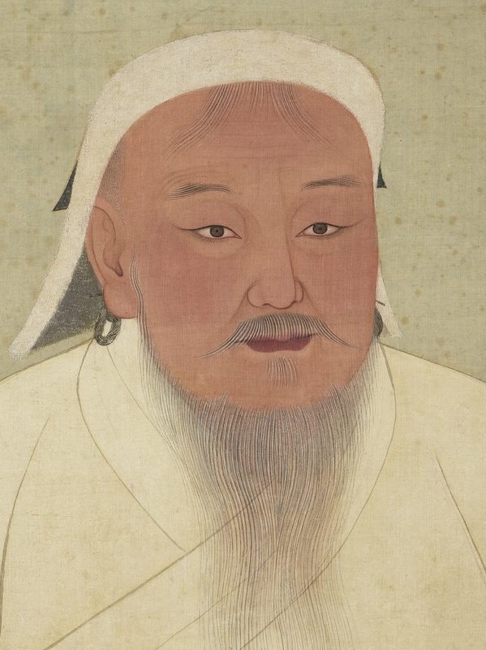

Tumen Doctrine
He conquered half the world without ever needing to be the strongest man on the field — because the field itself was his weapon, and the army was his body.

Tumen Doctrine
He conquered half the world without ever needing to be the strongest man on the field — because the field itself was his weapon, and the army was his body.
Feature map
Level-by-level features, as the figure refined them.
Khan's Knot
Bonus action · 1 CE · 60 ft · willing creatures.
Bind willing creatures into the Arban, up to your proficiency bonus in members (you always count as a member). The Knot holds until you dismiss it as a free action — it is never forced; willing men cannot be perfectly predicted, and that is the hole in every plan ever made against you. Knotted members gain the Muster, the Yam Relay, and the War Phase.
Muster and the Yam Relay
Passive · the Muster acts on your initiative; the Yam reaches 60 ft (120 ft at 6th level).
Muster: at the start of combat, any Knotted member may abandon its rolled initiative and act on your initiative count instead. Yam Relay: you may pass a tactical thought instantly to any Knotted member within 60 ft (120 ft from 6th level), and they may reply in kind — perfect information, relayed at the speed of horses. Reporting is silent, instantaneous, and cannot be overheard by ordinary means.
War Phase
Passive · requires 2+ Mustered members.
When 2 or more Mustered members' consecutive turns form a phase, each member may pause its turn once, yield to another member, and resume later within the same phase — turns interleave like cavalry across a valley. Start- and end-of-turn effects stay pinned to the individual creature. The economy is ordinary: no member ever gains extra movement, actions, or attacks from the interleave.
Noyan and Detachments
Bonus action · designate the Noyan and split the Arban.
Designate one Knotted member as your Noyan (second-in-command). You may split the Arban into two Detachments, each with its own independent War Phase. The Yam Relay now reaches 120 ft. The sülde are the formation's infrastructure: the White holds the command post; the Black can be repositioned as the formation moves.
White and Black Sülde
Passive · each sülde is a destructible standard (AC 12, HP 3 × your level).
The White Sülde — memory, law, identity — is a static command post planted where you stand; it does not move once planted. The Black Sülde — ambition, terror, forward motion — is a formation anchor you may reposition up to 30 ft as a bonus action. Neither sülde attacks, and neither takes damage meant for others. They are load-bearing: if both are destroyed, the Knot breaks and the Arban dissolves. You may plant a replacement sülde within 5 ft of you as an action (1 CE).
Full Tumen Doctrine
Passive · the doctrine at full strength.
The Arban grows to 10 members, with two Noyans and three Detachments, each Detachment with its own War Phase. Pause/resume inside a phase is unlimited, still within the ordinary one-turn economy — no extra movement, actions, or attacks, ever. The Horde Has No Center: if you are incapacitated, command passes to a Noyan for 1 minute — the formation fights on without you. There is no head to cut off.
Khagan of the Living Army
Passive · the succession never breaks.
You gain a third Noyan. You may transfer members between Detachments before the first Arban member acts in a round. Succession continues until all Noyans fall or the Arban dissolves — incapacitate one commander and the next inherits, and the next, and the next.
Maximum, Domain, or equivalent.
Capstone material.
Nerge: The Great Hunt
Designate one creature you can see as the Quarry for 1 minute. Hunt Lines form between pairs of Arban members within 30 ft of each other, drawn across the field. When the Quarry voluntarily crosses a Hunt Line, the member who formed that line may use a reaction to move up to 10 ft and make one opportunity attack against it. When three or more members form a closed polygon around the Quarry, it is Caught in the Nerge: it cannot Hide from the Arban, Disengage covers only one line-crossing per turn, and teleporting from inside to outside requires a CE check against your technique DC or it lands back inside. The Hunt breaks if the forming members move, are disabled, or are separated beyond line range.
Under the Eternal Blue Sky: One World, One Tumen
An open support Domain held under a Binding Vow: it never imposes an offensive sure-hit on an unwilling creature. At initiative 20, each willing Arban member that has not yet acted enters the Tumen Phase immediately after — each member still takes exactly one ordinary turn, fully interleaved with the others; no member gains extra movement, actions, or attacks. The Yam ignores ordinary walls: reported information reaches all Arban members instantly, regardless of barriers or distance within the Domain. Nerge lines extend to 60 ft while the Domain persists. Clash victory: your refinement grows by 10% per person currently under the technique's influence (non-compounding). The open sky feeds on the formation it shelters — the longer a fight runs under it, the stronger the Arban grows. End fights fast, or thin the Arban first.
- Clash points
- 1000
- Burnout
- 3 rounds
- Duration
- 3 minutes
- Radius
- 120-ft open radius
- Activation ✦
- full-turn action
- CE cost ✦
- 20
✦ Canon: figure Domains are Specific Domains — the stated profile governs, not the player point-unlock table.
The Last Tumen
Your answer to the question that has haunted you since the steppe: can the doctrine work on the unwilling world? Offer the Knot to up to 10 creatures within 60 ft — willing or not. Each unwilling target makes a Wisdom save against your technique DC; on a failure it is Knotted for 1 minute, counting as willing for your technique's effects. Fight as one, or die as ten.
Build-defining options.
This technique grants Innate Technique Feats — hand-authored applications of the figure's art, available in the builder's feat picker when you select this technique.
Edge cases and shared systems.
Campaign canon notes